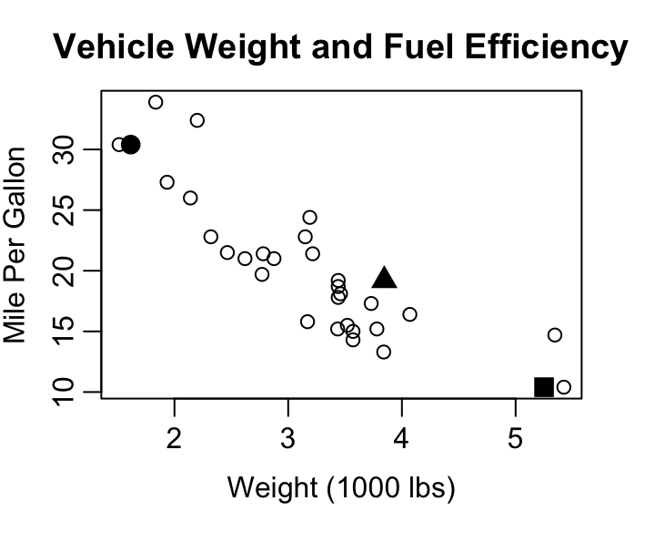
1 Visualize the Relationship
1.1 Scatterplots
Ever wondered how to tell if two things are related—like hours spent studying and the number of snacks consumed? If you haven’t worked with them before, it is now time for you to meet the scatterplot. A scatterplot is a graph that displays pairs of values for two quantitative variables. Each point represents one observation, with its position determined by the values of the two variables—one on the x-axis (horizontal), the other on the y-axis (vertical).
X-axis: Usually the independent variable (the one you think is doing the influencing).
Y-axis: Usually the dependent variable (the one you think is being influenced).
Consider Figure 1.1 below showing the relationship between vehicle weight and fuel efficiency for 32 cars from 1973-1974 as reported by Motor Trend magazine.
Three points have been highlighted with large solid plotting characters. The three points correspond to the data describing the Cadillac Fleetwood, Honda Civic, and Pontiac Firebird.
wt mpg
Cadillac Fleetwood 5.250 10.4
Honda Civic 1.615 30.4
Pontiac Firebird 3.845 19.2Starting with the Cadillac, where shoulld that car’s data be noted in the scatterplot of Figure 1.1? Reading across the x-axis for weight, we want the point to be a bit past 5 at 5.25 since the axis is measured in terms of 1,000 lbs. From X=5.25 we then move upward to a Y corresponding to 10.4 mpg. Since 10.4 is one of the smallest mpgs in the dataset we don’t move up much. X=5.25 and Y=10.4 intersect at the location of the solid square in the plot. The solid square marks the Cadillac Fleetwood. The solid circle belongs to the Honda Civic, and the Pontiac Firebird is marked by the solid triangle.
By showing every observed combination of your two quantitative variables, a scatter plot provides a quick view of the spread of each variable separately and a view of how they relate to each other. Looking at Figure 1.1 you can easily see the Cadillac Fleetwood had one of the lowest fuel efficiency levels and that the most efficient cars from the data achieved approximately 35 mpg. The figure also shows you that the weight of vehicles ranges from about 1,500 lbs up to about 5,500 lbs and that there seem to be a lot of cars right around 3,500 lbs, but hardly any in the 4,000 to 5,000 lb range.
The general downward slope of points going from the upper left corner down to the lower right corner shows the relationship between vehicle weight and fuel efficiency is exactly as we’d expect: heavier cars don’t get as many miles on a gallon of gas as lighter cars. This direction of the relationship, assuming weight influences fuel efficiency, is why weight was plotted on the x-axis as the independent variable and miles per gallon was plotted on the y-axis as the dependent variable.
In R
The scatterplot shown in Figure 1.1 was completed using simple base R graphics and the mtcars data contained in the datasets library and included in the default install of R. Try the code for yourself:
plot(mtcars$wt, mtcars$mpg,
xlab="Weight (1000 lbs)", ylab="Mile Per Gallon",
main="Vehicle Weight and Fuel Efficiency")
points(mtcars$wt[c(15,19,25)], mtcars$mpg[c(15,19,25)],
pch=c(15,16,17), cex=1.5)
identify(mtcars$wt, mtcars$mpg, rownames(mtcars))That last line of code, the identify function, allows you to generate labels for points in your scatterplot by clicking on points of interest. When you are done labeling points, hit the stop button or the esc key on your keyboard.
On Your Own
Consider the
carsdataset built into R via the datasets library. This dataframe does not provide information about different models of car like the mtcars dataset seen in Figure 1, instead it shows 50 measurements from an experiment that wanted to explore the stopping distance of a car traveling at various speeds. There are two columns in the data frame: speed, measured in miles per hour, and stopping distance, measured in feet.Which one should be the X in your scatterplot and which should be the Y? Why?
Create your scatterplot. Be sure to include relevant axis labels.
What can you learn from your scatterplot about the speeds used in the experiment?
What can you learn from your scatterplot about the stopping distances that were observed in the experiment?
What relationship between stopping distance and speed do you see in the scatterplot? Explain.
Based on your scatterplot, would a stopping distance of 60 ft be unusual for a car traveling at 10 mph? What about for a car traveling 20 mph? Explain.
Use the help menu to learn about the USArrests data frame in R.
?USArrests- Create a scatterplot with the rate of arrest for assault as the independent variable and the rate of arrest for murder as the dependent variable.
- Using your scatterplot, what is your estimate for the highest murder arrest rate in the US? Does it pair with the highest arrest rate for assault?
- From your scatterplot, what is more common: a murder arrest rate higher than 10 per 100,000 or lower than 10 per 100,000?
- What would you guess is the arrest rate for murder in a state with an assault arrest rate of 100 per 100,000? Explain.
- What does your scatterplot indicate is the relationship between a state’s arrest rates for assault and murder?
- Using the identify function, what state corresponds to the point at X of about 240 and Y of about 6? What two states have the highest arrest rates for assault? Which state has the highest rate of arrest for murder?
1.2 Advanced Scatterplotting
1.2.1 Jittering
Scatterplots are essential tools for visualizing relationships between two quantitative variables. However, when multiple data points share the same or very similar values, they can overlap on the plot, making it difficult to assess true distributions and where the density of the data lies. This phenomenon is known as overplotting.
Jittering is a technique used to address overplotting by adding a small amount of random noise to the position of each point. This noise is usually applied to one or both axes, causing points that would otherwise overlap to appear side by side.
Benefits of Jittering Include
Revealing Hidden Data Density
Without jittering, overlapping points may appear as a single point, obscuring the actual number of observations at that location. Jittering spreads these points apart, making clusters and concentrations more visible.
Improving Data Interpretation
By making individual points distinguishable, jittering allows viewers to better estimate the frequency of specific values and identify patterns or outliers that would otherwise be hidden.
Enhance Visual Clarity
Jittering reduces visual clutter caused by overplotting, resulting in a clearer and more informative plot. This is especially useful for categorical or discrete variables, where many data points may share identical values.
Though jittering includes adding noise to data, the amount of jitter is typically small relative to the scale of the data being jittered to ensure that the overall structure and trends of the data remain intact. This preserves the interpretability of the scatterplot while providing a more accurate representation of the data distributions.
Jittering is particularly helpful when one or both axes represent categorical or discrete variables, as these often lead to many overlapping points. For example, consider Figure 1.2 showing data from the same mtcars library seen in Figure 1.1. On the left you see the number of engine cylinders in each car plotted against the vehicle weight. As you might have suspected, the heavier cars tend to have more cylinders. Since cylinder count is discrete, the scatterplot of the raw data has a vertical stripe look to it as all values are equal to four, six, or eight. By adding small random noise to the cylinder count for the graph on the right of Figure 1.2, it becomes easier to see each vehicle in the plot. Particularly in the case of eight cylinders, several points in the 3,200 to 4,000 lb range are now visible where before the points were stacked on top of each other.
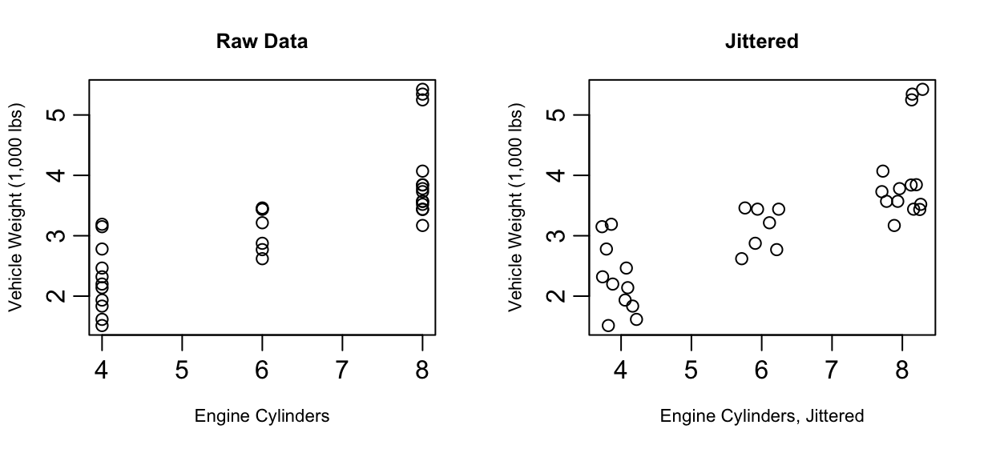
1.2.2 Adding a Third Variable
As we’ve seen, scatterplots are great at showing two variables - but what about three? Three dimensional scatterplots are possible with today’s technology and R will happily generate them. Below you’ll find a screenshot of a 3D scatterplot showing the weight, mpg, and cylinder count from cars in the mtcars data frame. If you run the code below for yourself, you’ll generate this plot in a form that allows you to click and drag the plotting box to rotate into different viewing angles.

library(rgl)
plot3d(mtcars$wt, mtcars$mpg, mtcars$cyl)This 3D scatterplot functionality is certainly fun to play with, and it can be useful as you explore data relationships, but it has clear limitations. When working with stationary forms of communication like printed paper, a rotating scatterplot just doesn’t work. Putting an animated 3D scatterplot into presentation slides can work, but it often just creates a distraction.
Incorporating information about your third variable into your plotting character is often a better choice especially if one of your variables is discrete or categorical. Figure 1.4 illustrates how color of plotting character can be used for a third variable that is either discrete or continuous. On the left of Figure 1.4 you see Figure 1.1 redone with color coded dots indicating the cylinder count of the engine. On the right you see color coding indicating the horsepower of the engine.
A few things to keep in mind when using color:
A non-trivial segment of the population has some form of color blindness. The inability to clearly distinguish between red and green is the most common form of color handicap so avoid creating plots that rely on distinguishing red dots from green ones.
If your work is going to be printed in black and white, you’ll want to use colors that will still be distinguishable in grey scale. Using color combined with plotting character changes is a good strategy for keeping your work clear when printed without color.
colorbrewer2.org is a good source for information on simple color schemes that are color-blind friendly and grey scale safe.
If using a continuous color scale, consult resources on Viridis (the scale used on the right side of Figure 1.4) or other color scales designed with color blindness in mind. R provides good information to consider here: https://cran.r-project.org/web/packages/viridis/vignettes/intro-to-viridis.html.
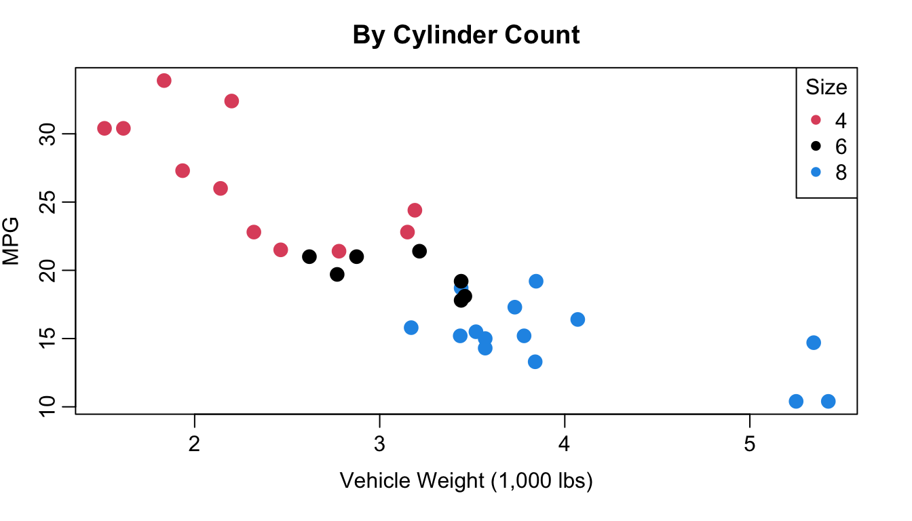
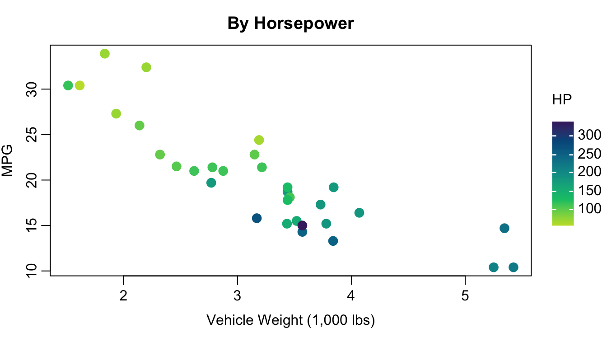
Plotting character differences don’t usually pop to our eyes quite as clearly as color, but sometimes they’re the better choice. Consider the case of a plot that has points for both male and female patients - using “M” and “F” as your plotting characters quickly distinguishes between the two groups and does so in a way that makes a legend less essential for understanding. Our brains are well trained to spot letter and numeric characters so you can use that to your advantage - think of “Y” and “N” for yes/no situations, “G” and “B” for good/bad, or even “1”, “2”, “3”, “4” if you have groups that are readily identified by a number like 1st, 2nd, 3rd, or 4th year of school. Figure 1.5 shows you vehicle weight and fuel efficiency with plotting character indicating if the vehicle transmission is manual (M) or automatic (A). Avoid letter combos like “O” and “C” for open/closed though - some letters can look the same too easily especially if partially obscured by other points.
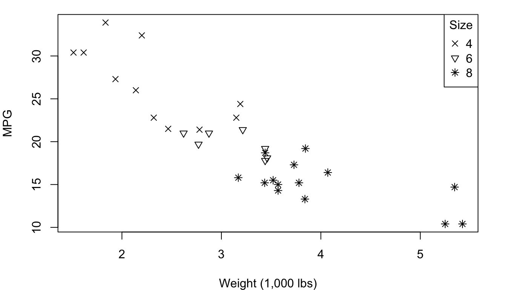
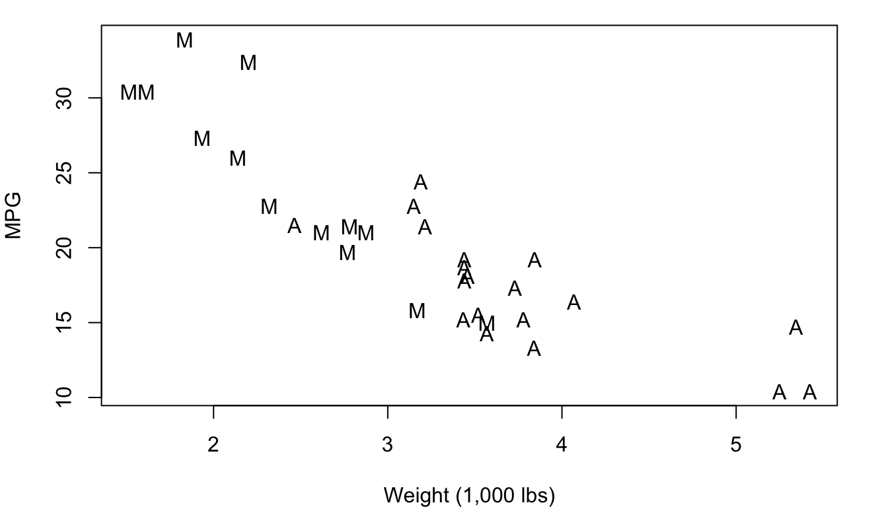
1.2.3 Scatterplot Matrix
When your data has more than two columns and you want to get a quick idea of all possible two-variable relationship, a scatterplot matrix is your answer. A scatterplot matrix (sometimes called a “pairs plot”) is a grid of scatterplots that visualizes relationships between each pair of numerical variables in a dataset. Each cell in the matrix displays a scatterplot comparing a pair of variables, with one variable plotted along the x-axis and the other along the y-axis.
Figure 1.6 shows a scatterplot matrix of five quantitative variables from the mtcars data frame: MPG, engine displacement, horsepower, rear axle ratio, and weight. Because of the way it is formatted, every pair of variables is plotted twice. This allows you to see engine displacement on the X-axis with MPG on the Y-axis in the top row, second position and the reverse in the first position of the second row.
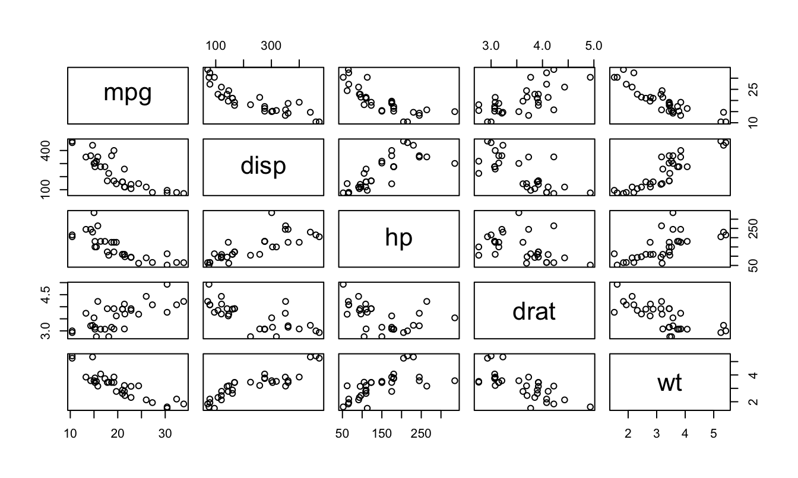
A scatterplot matrix allows for a comprehensive, at-a-glance view of how all variables in your data frame relate to one another, making it a valuable tool in exploratory data analysis. You can quickly see from Figure 1.6 which pairs are most strongly related to each other, which have positive upward-sloping trends, and which are downward-sloping.
In R
To jitter a variable for your plot, you can use the jitter function. The jitter function can work with simply the variable you wish to jitter as the only input, or can take additional arguments to specify the amount of jitter you want to apply. Consider each of the jittered graphs below in Figure 1.7 showing a the number of cylinders in a car’s engine plotted against the horsepower of the vehicle. The graphs were created using the shown code.
plot(jitter(mtcars$cyl), mtcars$hp)
plot(jitter(mtcars$cyl, .5), mtcars$hp)
plot(jitter(mtcars$cyl, 1.5), mtcars$hp)
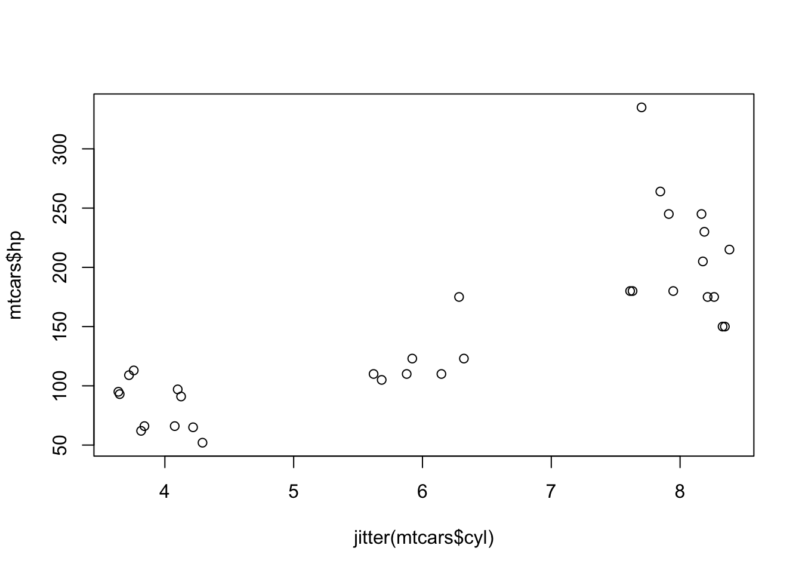
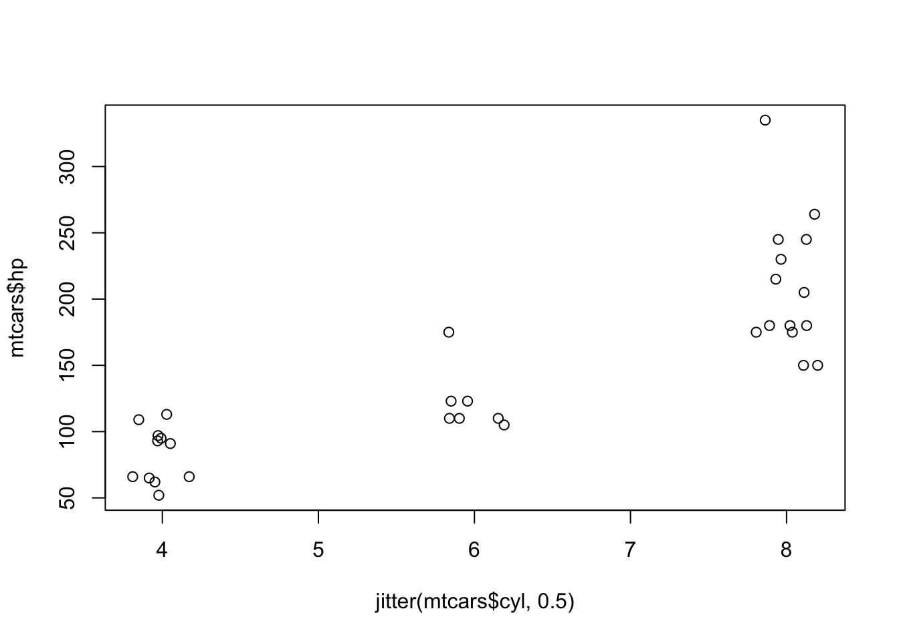
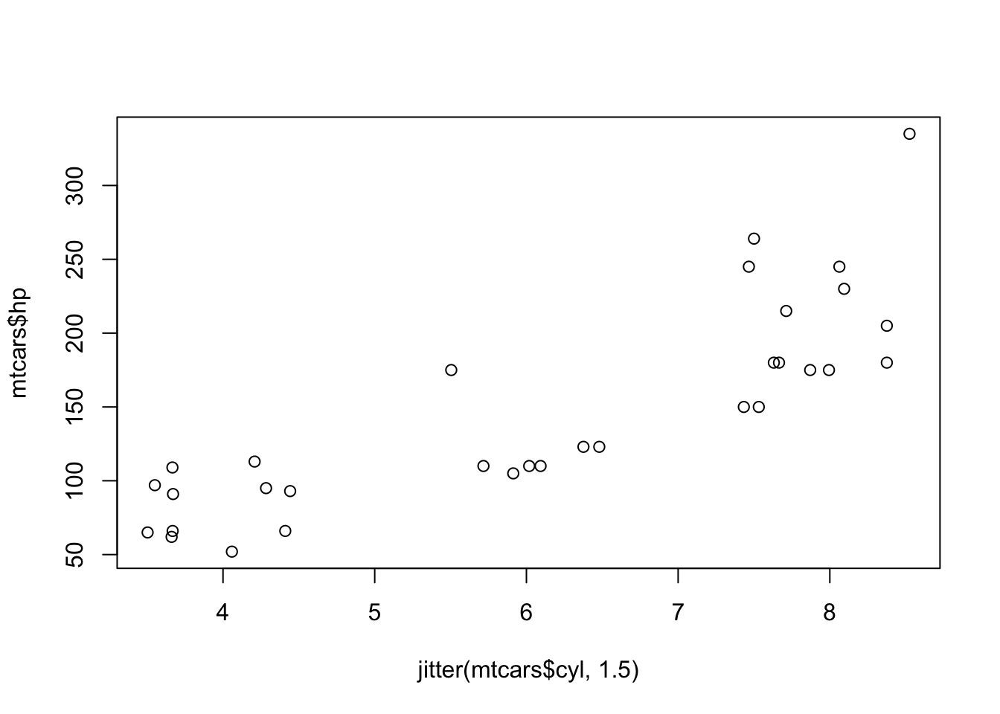
Adding color or changing your plotting characters can be done inside your plot function call using the col and pch inputs. Specifying col is for color, and pch is for plotting character. As you can see below, sometimes you might get a little creative with arithmetic to pull out the numbered plotting characters you’re after. The numbers one through ten can pull out colors for you as well, or you can specify color names as done here, or even hex code color references.
par(mar=c(4,4,1,1))
plot(mtcars$wt, mtcars$hp, col=c("steelblue", "tomato")[mtcars$am+1], pch=16)
legend("bottomright", c("Automatic", "Manual"),
col=c("steelblue", "tomato"), pch=16)
plot(mtcars$wt, mtcars$hp, pch=(mtcars$am+5)+mtcars$am*9)
legend("bottomright", c("Automatic", "Manual"), pch=c(5, 15))
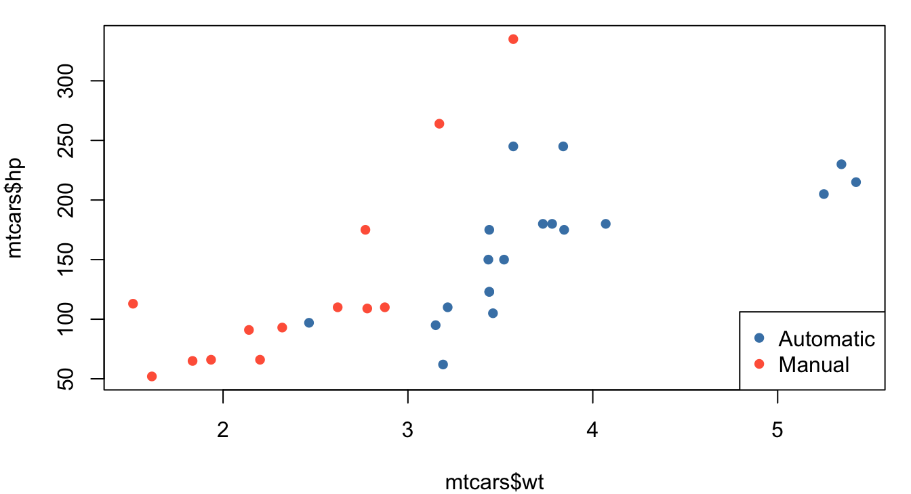
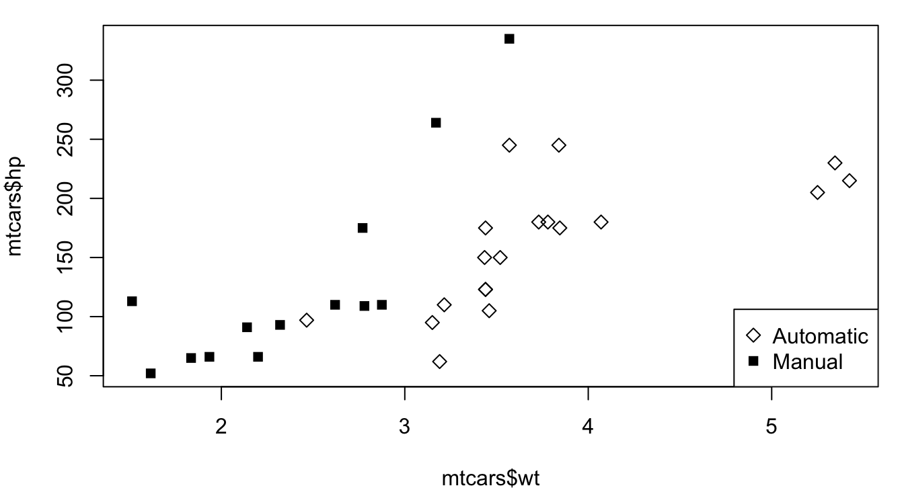
The continuous color approach is best done going beyond the base R plot command. Options include using the plt function in the tinyplot library or switching to ggplot graphics and the ggplot2 library. Both of these options are shown in Figure 1.9.
library(tinyplot)
plt(mtcars$wt, mtcars$mpg, by=mtcars$hp,
xlab="Weight (1,000 lbs)", ylab="MPG", pch=16)
library(ggplot2)
ggplot(data=mtcars, aes(x=wt, y=mpg, color=hp))+
geom_point()
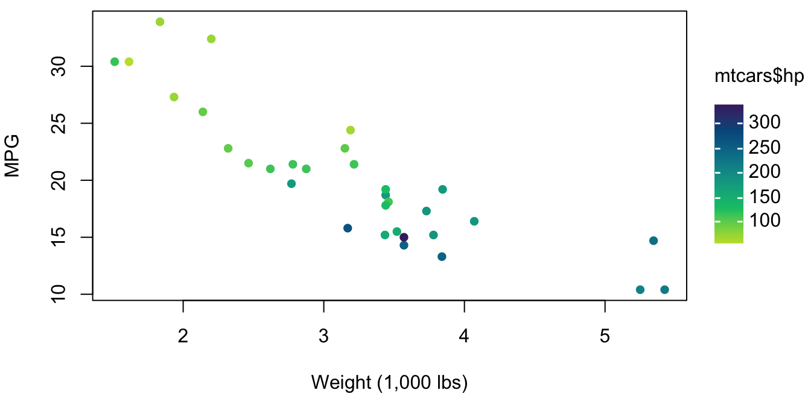
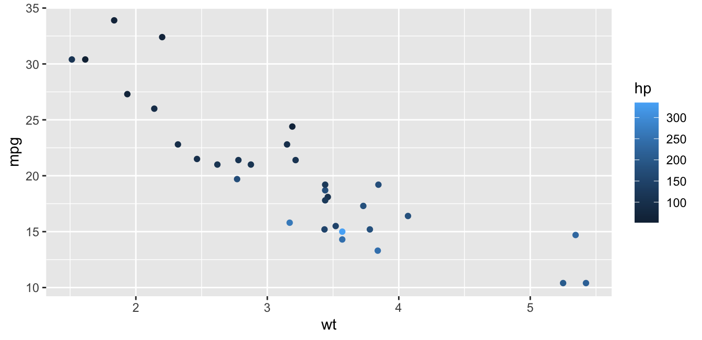
Creating a scatterplot matrix is very straightforward provided your data is in a data frame. Using the plot command on a data frame will automatically create a scatterplot matrix. If you want only a subset of the columns, specify the columns you want in square brackets.
plot(mtcars[,c(1,4,6)])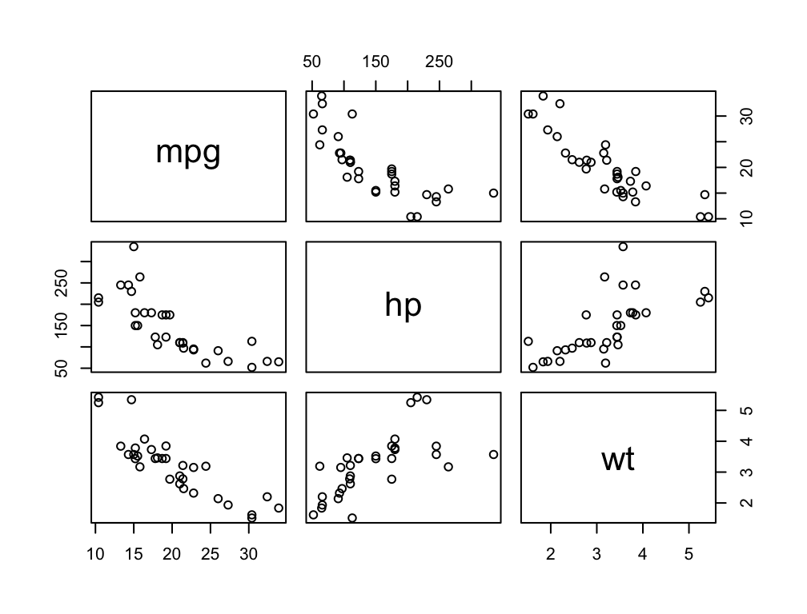
On Your Own
Consider the
treesdataset built into R via the datasets library. This dataframe gives the girth, height, and volume of Black Cherry trees.Create a scatter plot matrix of the tree data. Based on your plot, if you want to estimate a tree’s volume, what is more helpful to know: the tree’s girth or the tree’s height? Explain your choice.
Create a scatter plot of tree height and volume. Use plotting character 16, a solid circle for trees with a girth greater than 13 and an empty triangle for trees with a girth less than 13. Include a legend. What do you see of interest in this plot?
Consider the
swissdataset built into R via the datasets library. Use the help menu to learn about this data covering fertility and socioeconomic indicators over 47 provinces in 1888.Create a scatterplot matrix of all columns in the the swiss data frame. Which included socioeconomic factors, if any, are positively related to fertility rate?
Using your scatterplot matrix from part a, which socioeconomic factors, if any, are negatively related to fertility rate?
Create a scatterplot with the percent of males in agricultural occupations on the X-axis and fertility rate on the Y-axis. Use plotting character 16, the solid circle. For provinces with a population that is less than 50% Catholic, make the circles orchid. For provinces with a population that is over 50% Catholic, make the circles royalblue3. Do you see any interesting relationships in your graph? Explain.
Create a scatterplot with the percent of males in agricultural occupations on the X-axis and the rate of education beyond primary school on the Y-axis. Use plotting character 16, the solid circle and color it using a continuous color scale for percent Catholic. Do you see any interesting relationships in your graph? Explain.